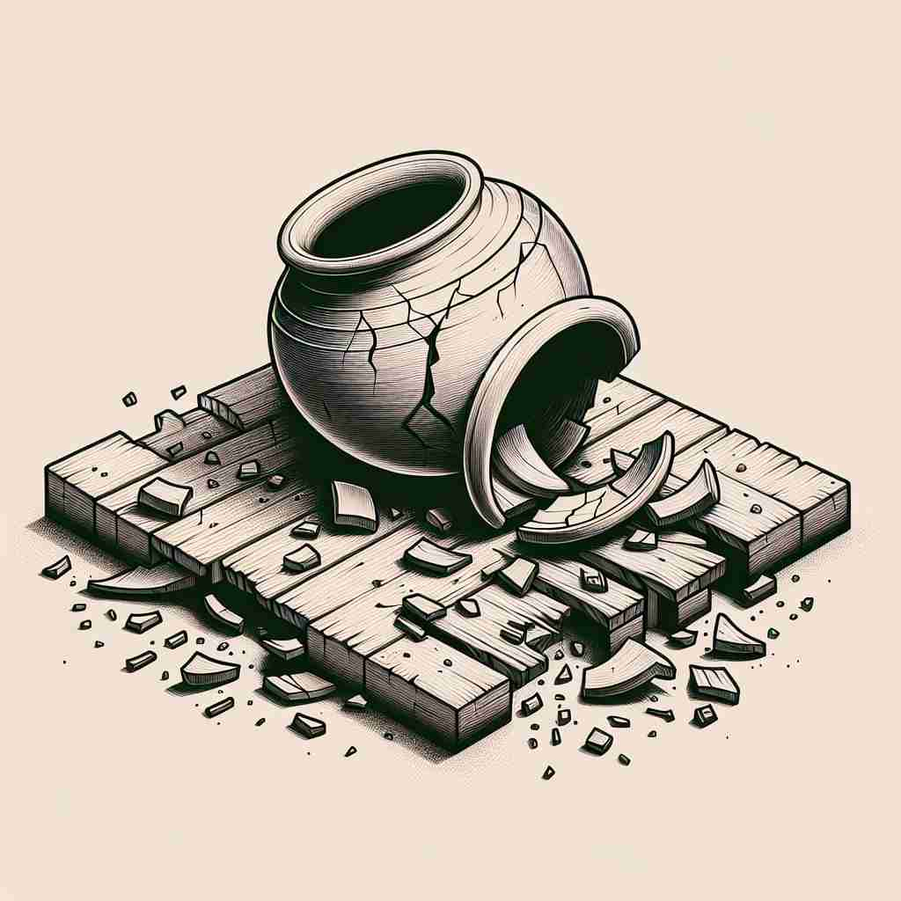

💬 The hammer will damage the table if it strikes too hard. 如果锤子用力过猛，会损坏桌子。

💬 There is visible damage to the jar on the floor. 地板上的罐子明显有损坏。
💬 The hammer will damage the table if it strikes too hard. 如果锤子用力过猛，会损坏桌子。
💬 There is visible damage to the jar on the floor. 地板上的罐子明显有损坏。
🧠 记住'damage'的核心含义是'损害'或'破坏'。想象一个物体被损坏的画面，然后将这个概念扩展到抽象的事物，如名誉或情感。无论是名词还是动词用法，都围绕着这个'造成损害'的核心概念。这种损害可以是物理的、情感的，甚至可以转化为具体的赔偿金额。通过这个核心概念，你可以轻松理解和记忆'damage'的各种用法。
🔈 ['dæmɪdʒ]
🗝️ n. physical harm that impairs the value, usefulness, or normal function of something 对物品的价值、实用性或正常功能造成损害的身体伤害
🎭 想象一个暴风雨后的花园。大树的枝叶散落一地，花坛被水淹没，小径上满是泥泞。这些景象展现了'damage'作为对事物价值、用途或正常功能的物理损害。
💬 The storm caused significant damage to the roof. 暴风雨对屋顶造成了重大损害。
🌳 由词根 "dam"（来自拉丁语，意为伤害）和后缀 "-age"（表示行为或结果）组成，整体表示 '损害、伤害'。
💡 记忆 "damage" 时，可以联想为 "受损的年纪（age）"，用于记忆某物被损坏或受伤。通过将 '伤害' 和 '行为结果' 的概念联系起来，加深理解。
🗝️ v. to cause physical harm to something 对某物造成身体伤害
🎭 在一个工地上，一位工人在搬运砖块时不小心摔了一块砖，砸到了刚铺好的地板。地板立即裂开，展示了'damage'作为对某物造成物理伤害的动作。
💬 The fire damaged several buildings in the neighborhood. 火灾损坏了附近的几座建筑。
🤔 动词化的核心含义
🗝️ n. a detrimental effect on someone's reputation or situation 对某人声誉或处境的不利影响
🎭 在一次新闻发布会上，一位企业高管被指控涉及丑闻。随着媒体的曝光，企业股票持续下跌，这场景展示了'damage'对某人名誉或局势的负面影响。
💬 The scandal did serious damage to his political career. 这起丑闻对他的政治生涯造成了严重损害。
🤔 从物理损害扩展到抽象概念
🗝️ n. costs to be paid as compensation for harm or injury 支付作为对伤害或损害的赔偿费用
🎭 在一个法庭上，原告展示了一辆被撞坏的汽车，要求被告支付赔偿金以修复车辆。这场景体现了'damage'表示因伤害或损失而需支付的费用。
💬 The court awarded $10,000 in damages to the plaintiff. 法院判给原告$10,000的赔偿。
🤔 损害造成的后果转化为具体的赔偿金额
🗝️ v. to have a negative effect on someone or something 对某人或某事产生负面影响
🎭 在一场激烈的辩论后，一名政治家的立场因言论不当而受到广泛批评，他的支持率骤降。这反映了'damage'对某人或某事物产生负面影响。
💬 Constant criticism can damage a child's self-esteem. 持续的批评会损害孩子的自尊心。
🤔 从物理损害扩展到更广泛的负面影响